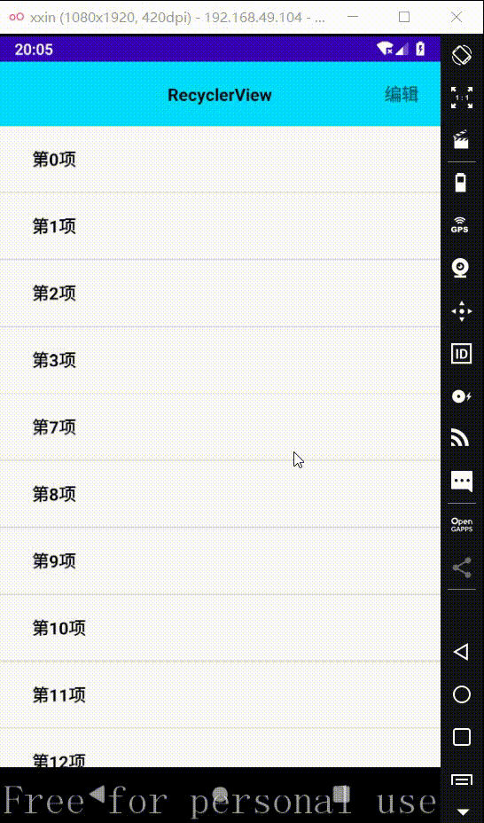

图中展示了部分效果
所需资源
只用到了两个小图片
布局
主页布局
这里注意下，底部的操作栏初始状态是隐藏的，当点击右上角编辑按钮时才显示它
1
2
3
4
5
6
7
8
9
10
11
12
13
14
15
16
17
18
19
20
21
22
23
24
25
26
27
28
29
30
31
32
33
34
35
36
37
38
39
40
41
42
43
44
45
46
47
48
49
50
51
52
53
54
55
56
57
58
59
60
61
62
63
64
65
66
67
68
69
70
71
72
73
74
75
76
77
78
79
80
81
82
83
84
85
86
87
88
89
| <?xml version="1.0" encoding="utf-8"?>
<LinearLayout xmlns:android="http://schemas.android.com/apk/res/android"
xmlns:app="http://schemas.android.com/apk/res-auto"
xmlns:tools="http://schemas.android.com/tools"
android:layout_width="match_parent"
android:layout_height="match_parent"
android:orientation="vertical"
tools:context=".MainActivity">
<androidx.constraintlayout.widget.ConstraintLayout
android:background="@android:color/holo_blue_bright"
android:layout_width="match_parent"
android:layout_height="60dp">
<TextView
android:layout_width="wrap_content"
android:layout_height="wrap_content"
android:text="RecyclerView"
android:textColor="@color/black"
android:textSize="16sp"
android:textStyle="bold"
app:layout_constraintBottom_toBottomOf="parent"
app:layout_constraintEnd_toEndOf="parent"
app:layout_constraintStart_toStartOf="parent"
app:layout_constraintTop_toTopOf="parent"
tools:ignore="MissingConstraints" />
<TextView
android:id="@+id/editor"
android:layout_width="wrap_content"
android:layout_height="wrap_content"
android:text="编辑"
android:textSize="16sp"
android:textStyle="bold"
android:layout_marginRight="20dp"
app:layout_constraintBottom_toBottomOf="parent"
app:layout_constraintEnd_toEndOf="parent"
app:layout_constraintTop_toTopOf="parent"
tools:ignore="MissingConstraints"
android:layout_marginEnd="20dp" />
</androidx.constraintlayout.widget.ConstraintLayout>
<androidx.recyclerview.widget.RecyclerView
android:id="@+id/recyclerView"
android:layout_width="match_parent"
android:layout_height="0dp"
android:layout_weight="1"/>
<View
android:background="@color/black"
android:layout_width="match_parent"
android:layout_height="1dp"/>
<androidx.constraintlayout.widget.ConstraintLayout
android:visibility="gone"
android:id="@+id/footBar"
android:padding="10dp"
android:orientation="horizontal"
android:layout_width="match_parent"
android:layout_height="wrap_content">
<TextView
android:id="@+id/selectSum"
android:layout_width="wrap_content"
android:layout_height="wrap_content"
android:text="当前共选中: "
android:textStyle="bold"
android:textSize="16sp"
android:textColor="@android:color/holo_red_dark"
app:layout_constraintBottom_toBottomOf="parent"
app:layout_constraintStart_toStartOf="parent"
app:layout_constraintTop_toTopOf="parent"
tools:ignore="MissingConstraints" />
<Button
android:text="全选"
android:id="@+id/selectAll"
android:layout_width="wrap_content"
android:layout_height="wrap_content"
app:layout_constraintBottom_toBottomOf="parent"
app:layout_constraintEnd_toEndOf="parent"
app:layout_constraintTop_toTopOf="parent"
tools:ignore="MissingConstraints" />
<Button
android:text="删除"
android:id="@+id/deleteAll"
android:layout_width="wrap_content"
android:layout_height="wrap_content"
app:layout_constraintBottom_toBottomOf="parent"
app:layout_constraintEnd_toStartOf="@+id/selectAll"
app:layout_constraintTop_toTopOf="parent"
tools:ignore="MissingConstraints" />
</androidx.constraintlayout.widget.ConstraintLayout>
</LinearLayout>
|
item布局
列表项的布局item.xml，这里注意下，表示选中状态的图片在没有开启编辑状态时是隐藏的
1
2
3
4
5
6
7
8
9
10
11
12
13
14
15
16
17
18
19
20
21
22
23
24
25
26
27
28
| <?xml version="1.0" encoding="utf-8"?>
<LinearLayout xmlns:android="http://schemas.android.com/apk/res/android"
xmlns:tools="http://schemas.android.com/tools"
android:layout_width="match_parent"
android:padding="10dp"
android:gravity="center_vertical"
android:layout_height="wrap_content"
tools:ignore="UseCompoundDrawables">
<ImageView
android:visibility="gone"
android:id="@+id/itemSelect"
android:src="@drawable/select"
android:layout_width="20dp"
android:layout_height="20dp"
tools:ignore="ContentDescription" />
<TextView
android:layout_marginTop="10dp"
android:layout_marginBottom="10dp"
android:id="@+id/itemTitle"
android:textColor="@color/black"
android:textSize="16sp"
android:textStyle="bold"
android:layout_marginLeft="20dp"
android:layout_width="wrap_content"
android:layout_height="wrap_content"/>
</LinearLayout>
|
程序
item属性类
创建ItemProperty类，用于记录item的属性值
1
2
3
4
5
6
7
8
9
10
11
12
13
14
15
16
17
18
19
20
21
22
23
|
public class ItemProperty {
private String title;
private boolean isSelect;
public String getTitle() {
return title;
}
public boolean isSelect() {
return isSelect;
}
public void setTitle(String title) {
this.title = title;
}
public void setSelect(boolean select) {
isSelect = select;
}
}
|
列表构造器
boolean isEditStatus表示现在是否在编辑状态，通过setEditMode(boolean)方法可以设置，传入true时表示进入编辑状态，反之退出
List<ItemProperty> itemProperties是item属性的集合，通过notifyList(List<ItemProperty>)方法可以设置，设置时更新数据；通过getItemProperties()可以获取这个变量值
然后有一个用于实现itemClick的接口等一系列，在onBindViewHolder()中响应了它，并且onBindViewHolder()中根据不同状态对item的属性做不同的设置，其它没啥好解释的
1
2
3
4
5
6
7
8
9
10
11
12
13
14
15
16
17
18
19
20
21
22
23
24
25
26
27
28
29
30
31
32
33
34
35
36
37
38
39
40
41
42
43
44
45
46
47
48
49
50
51
52
53
54
55
56
57
58
59
60
61
62
63
64
65
66
67
68
69
70
71
72
73
74
75
76
77
78
79
80
81
82
83
84
85
86
| public class RecyclerBuilder extends RecyclerView.Adapter<RecyclerBuilder.MyViewHolder> {
private final Context context;
private List<ItemProperty> itemProperties;
public RecyclerBuilder(Context context) {
this.context = context;
}
@NonNull
@Override
public MyViewHolder onCreateViewHolder(@NonNull ViewGroup parent, int viewType) {
View view = LayoutInflater.from(context).inflate(R.layout.item, parent, false);
return new MyViewHolder(view);
}
@Override
public void onBindViewHolder(@NonNull MyViewHolder holder, int position) {
holder.itemTitle.setText(itemProperties.get(position).getTitle());
if (isEditStatus){
holder.itemSelect.setVisibility(View.VISIBLE);
if (itemProperties.get(position).isSelect()){
holder.itemSelect.setImageResource(R.drawable.selectfill);
}
else {
holder.itemSelect.setImageResource(R.drawable.select);
}
}
else {
holder.itemSelect.setVisibility(View.GONE);
}
holder.itemView.setOnClickListener(view -> {
if (onRecyclerViewItemClick != null){
onRecyclerViewItemClick.OnItemClick(holder.getAdapterPosition(), itemProperties);
}
});
}
@Override
public int getItemCount() {
return itemProperties.size();
}
public static class MyViewHolder extends RecyclerView.ViewHolder {
private final TextView itemTitle;
private final ImageView itemSelect;
public MyViewHolder(@NonNull View itemView) {
super(itemView);
itemTitle = itemView.findViewById(R.id.itemTitle);
itemSelect = itemView.findViewById(R.id.itemSelect);
}
}
public List<ItemProperty> getItemProperties() {
return itemProperties;
}
@SuppressLint("NotifyDataSetChanged")
public void notifyList(List<ItemProperty> itemProperties){
this.itemProperties = itemProperties;
notifyDataSetChanged();
}
private boolean isEditStatus;
@SuppressLint("NotifyDataSetChanged")
public void setEditMode(boolean isEditStatus){
this.isEditStatus = isEditStatus;
notifyDataSetChanged();
}
public void setOnRecyclerViewItemClick(OnRecyclerViewItemClick onRecyclerViewItemClick){
this.onRecyclerViewItemClick = onRecyclerViewItemClick;
}
private OnRecyclerViewItemClick onRecyclerViewItemClick;
interface OnRecyclerViewItemClick{
void OnItemClick(int position, List<ItemProperty> itemProperties);
}
}
|
主页
当点击右上角编辑按钮时，进入编辑模式，显示列表item表示选中的图标，此时点击item将会亮起选中图标
点击全选会根据当前的选中状态，全部选中或者取消全部选中
点击删除出现弹窗提示，此时确定即删除所有选中的item
1
2
3
4
5
6
7
8
9
10
11
12
13
14
15
16
17
18
19
20
21
22
23
24
25
26
27
28
29
30
31
32
33
34
35
36
37
38
39
40
41
42
43
44
45
46
47
48
49
50
51
52
53
54
55
56
57
58
59
60
61
62
63
64
65
66
67
68
69
70
71
72
73
74
75
76
77
78
79
80
81
82
83
84
85
86
87
88
89
90
91
92
93
94
95
96
97
98
99
100
101
102
103
104
105
106
107
108
109
110
111
112
113
114
115
116
117
118
119
120
121
122
123
124
125
126
127
128
129
130
131
132
133
134
135
136
137
138
139
140
141
142
143
144
145
146
147
148
149
150
151
152
153
154
155
156
157
158
159
160
161
162
163
164
165
166
167
168
169
170
171
172
173
174
175
176
177
178
179
180
181
182
183
184
185
186
187
188
189
190
191
192
193
194
195
196
197
198
199
200
201
202
203
204
205
206
207
208
209
210
211
212
213
214
215
216
217
218
219
220
221
222
223
224
225
226
| public class MainActivity extends AppCompatActivity implements View.OnClickListener, RecyclerBuilder.OnRecyclerViewItemClick {
private TextView editor_et;
private TextView selectSum_tv;
private Button deleteAll_btn;
private Button selectAll_btn;
private RecyclerView recyclerView;
private ConstraintLayout footBar;
private final List<ItemProperty> itemProperties = new ArrayList<>();
private RecyclerBuilder recyclerBuilder;
private boolean isEditStatus = false;
private boolean isSelectAll = false;
private int selectedSum;
@Override
protected void onCreate(Bundle savedInstanceState) {
super.onCreate(savedInstanceState);
setContentView(R.layout.activity_main);
initView();
initData();
initEvent();
}
private void initView() {
editor_et = findViewById(R.id.editor);
selectSum_tv = findViewById(R.id.selectSum);
deleteAll_btn = findViewById(R.id.deleteAll);
selectAll_btn = findViewById(R.id.selectAll);
recyclerView = findViewById(R.id.recyclerView);
footBar = findViewById(R.id.footBar);
}
private void initData() {
recyclerBuilder = new RecyclerBuilder(MainActivity.this);
LinearLayoutManager linearLayoutManager = new LinearLayoutManager(MainActivity.this);
recyclerView.setAdapter(recyclerBuilder);
recyclerView.setLayoutManager(linearLayoutManager);
for (int i = 0; i < 100; i++) {
ItemProperty itemProperty = new ItemProperty();
itemProperty.setTitle("第" + i + "项");
itemProperties.add(itemProperty);
recyclerBuilder.notifyList(itemProperties);
}
recyclerView.addItemDecoration(new DividerItemDecoration(MainActivity.this, DividerItemDecoration.VERTICAL));
}
private void initEvent() {
recyclerBuilder.setOnRecyclerViewItemClick(this);
editor_et.setOnClickListener(this);
selectAll_btn.setOnClickListener(this);
deleteAll_btn.setOnClickListener(this);
}
@SuppressLint({"SetTextI18n", "NotifyDataSetChanged"})
@Override
public void OnItemClick(int position, List<ItemProperty> itemProperties) {
if (isEditStatus){
ItemProperty itemProperty = itemProperties.get(position);
if (itemProperty.isSelect()){
selectedSum--;
itemProperty.setSelect(false);
}
else {
selectedSum++;
itemProperty.setSelect(true);
}
if (selectedSum == itemProperties.size()){
selectAll_btn.setText("取消全选");
isSelectAll = true;
}
else {
selectAll_btn.setText("全选");
isSelectAll = false;
}
selectSum_tv.setText("当前共选中: " + selectedSum + "个");
recyclerBuilder.notifyDataSetChanged();
}
else {
Toast.makeText(MainActivity.this, "点击了：" + position, Toast.LENGTH_SHORT).show();
}
}
@SuppressLint("NonConstantResourceId")
@Override
public void onClick(View view) {
switch (view.getId()){
case R.id.editor:
editorClick();
break;
case R.id.selectAll:
selectAllClick();
break;
case R.id.deleteAll:
deleteAllClick();
}
}
private void editorClick() {
if (isEditStatus){
editor_et.setText("编辑");
footBar.setVisibility(View.GONE);
isEditStatus = false;
}
else {
editor_et.setText("取消");
footBar.setVisibility(View.VISIBLE);
isEditStatus = true;
clearAllSelected();
}
recyclerBuilder.setEditMode(isEditStatus);
}
@SuppressLint("NotifyDataSetChanged")
private void selectAllClick() {
if (isSelectAll){
clearAllSelected();
}
else {
checkAllItem();
}
recyclerBuilder.notifyDataSetChanged();
}
@SuppressLint("SetTextI18n")
private void checkAllItem() {
List<ItemProperty> itemProperties = recyclerBuilder.getItemProperties();
selectedSum = itemProperties.size();
selectSum_tv.setText("当前选中了: " + selectedSum + "个");
isSelectAll = true;
selectAll_btn.setText("取消全选");
for (int i = 0; i < itemProperties.size(); i++) {
itemProperties.get(i).setSelect(true);
}
}
@SuppressLint("SetTextI18n")
private void clearAllSelected() {
List<ItemProperty> itemProperties = recyclerBuilder.getItemProperties();
selectedSum = 0;
selectSum_tv.setText("当前选中了: " + selectedSum + "个");
isSelectAll = false;
selectAll_btn.setText("全选");
for (int i = 0; i < itemProperties.size(); i++) {
itemProperties.get(i).setSelect(false);
}
}
@SuppressLint({"SetTextI18n", "NotifyDataSetChanged"})
private void deleteAllClick() {
if (selectedSum == 0){
Toast.makeText(MainActivity.this, "没有选中", Toast.LENGTH_SHORT).show();
return;
}
AlertDialog.Builder builder = new AlertDialog.Builder(MainActivity.this);
builder.setTitle("确定删除吗")
.setMessage("将会删除" + selectedSum + "个item")
.setPositiveButton("确定", (dialogInterface, i) -> {
deleteSelected();
dialogInterface.dismiss();
})
.setNeutralButton("取消", (dialogInterface, i) -> dialogInterface.dismiss())
.create().show();
}
@SuppressLint({"SetTextI18n", "NotifyDataSetChanged"})
private void deleteSelected() {
List<ItemProperty> itemProperties = recyclerBuilder.getItemProperties();
for (int i = itemProperties.size()-1, j = 0; i >= j; i--){
ItemProperty itemProperty = itemProperties.get(i);
if (itemProperty.isSelect()){
itemProperties.remove(itemProperty);
selectedSum--;
}
}
selectSum_tv.setText("当前选中了: " + selectedSum + "个");
recyclerBuilder.notifyDataSetChanged();
}
}
|
源代码：https://github.com/xxinPro/RecyclerCheck